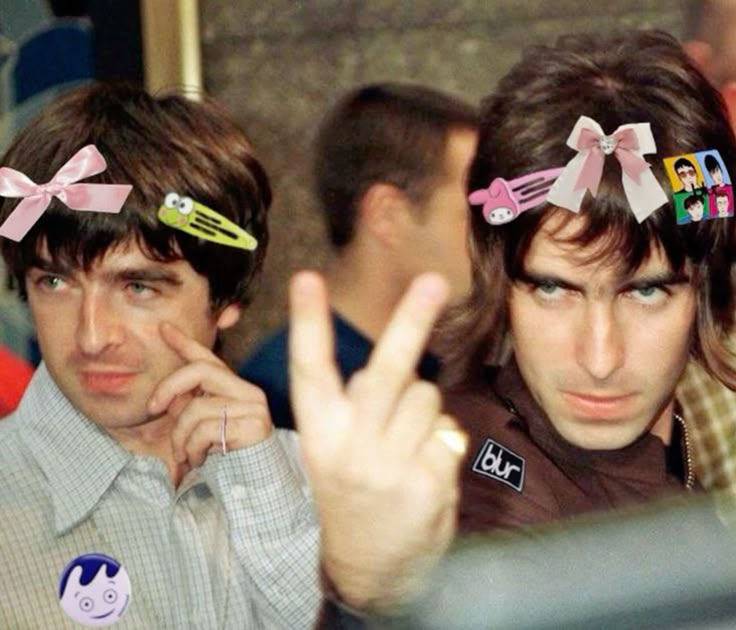

Звук
Плотные гитары, прямой ритм, мелодичные припевы и чувство масштаба даже в камерной песне.
Я фанат Oasis и хочу поделиться с вами этой группой: её музыкой, альбомами и песнями, к которым хочется возвращаться.

Плотные гитары, прямой ритм, мелодичные припевы и чувство масштаба даже в камерной песне.
Манчестерская самоуверенность, британская язвительность и умение не извиняться за собственный вкус.
Ностальгия, ночные поездки, огни города и музыка, которую хочется подпевать во весь голос.
Пять больших вечеров из разных глав истории группы — от домашнего Manchester до позднего выступления в The Roundhouse.
Загружаем концертный архив…
Семь студийных альбомов Oasis — с короткими заметками и треклистами.
Загружаем дискографию…
Светлая, упрямая и почти неуязвимая по настроению.
Дебютная дерзость и гитары, которые не собираются извиняться.
Припев, который словно уже принадлежит целой толпе.
Длинная музыкальная дымка для позднего вечера.
Романтика, громкость и эмоциональный размах.
Золотая середина между мелодией и рок-н-ролльной наглостью.
Песни с синглов и дополнительных релизов: не менее интересная сторона каталога Oasis.
Загружаем подборку B-sides…
Редкие и неочевидные названия. Без сюжетных подсказок и длинных объяснений — лучше включить и услышать самому.
Загружаем редкие песни…
Мой плейлист, составленный в Apple Music.
Британские гитары и соседние музыкальные миры.
Слушать альбомами, переслушивать любимые треки и не стесняться громкости.